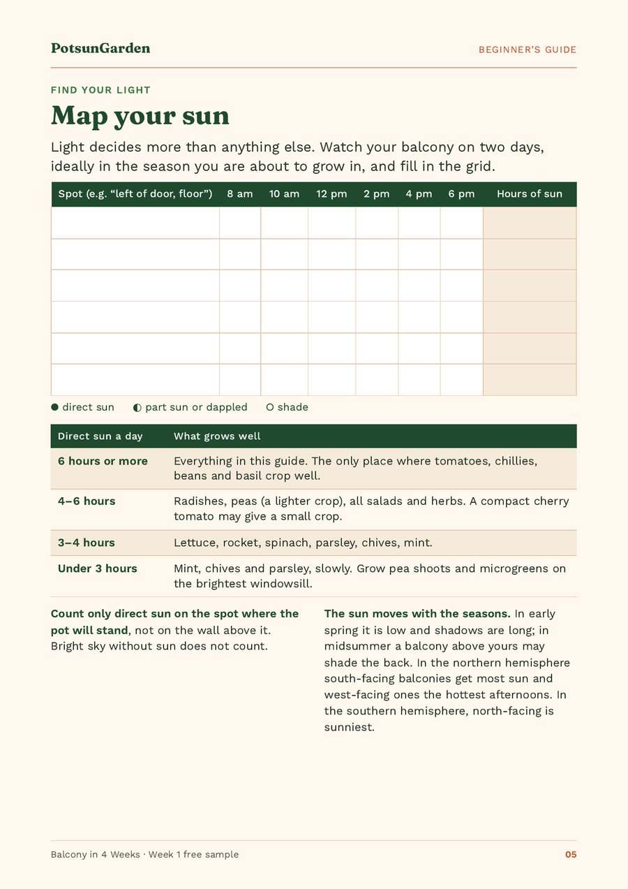

How many hours of sun does your balcony get, and what can you grow?
Tomatoes, chillies, beans and basil need 6 hours or more of direct sun a day; radishes and peas want 4–6 hours; lettuce, rocket, spinach and most herbs manage with 3–4 hours. With under 3 hours, grow mint, chives and parsley (slowly), and pea shoots and microgreens on your brightest windowsill. You can measure your own balcony in two days with a pencil and a watch.
Quick facts
| 6 hours or more | Tomatoes, chillies, beans and basil (and everything in our guide) |
|---|---|
| 4–6 hours | Radishes, peas (a lighter crop), all salads and herbs |
| 3–4 hours | Lettuce, rocket, spinach, parsley, chives, mint |
| Under 3 hours | Mint, chives and parsley, slowly; pea shoots and microgreens on the brightest windowsill |
| How to measure | Two days; check each spot at about 8 am, 10 am, 12 pm, 2 pm, 4 pm and 6 pm |
| What counts | Only direct sun on the spot where the pot stands; bright sky without sun does not count |
| Definitions | At least 6 hours is “full sun” and 4–6 hours “partial shade” (University of Illinois Extension) |
| Seasons | A spot with six hours in June may get two in November; check again each autumn |
| Too much sun | Shade cloth (30–50%) or afternoon shade for salads |
How do you count your hours of sun?
Pick two days, ideally in the season you are about to grow in. Make a list of the spots where a pot could stand, for example "left of the door, floor" or "railing, right corner". Then look at each spot every two hours or so: 8 am, 10 am, 12 pm, 2 pm, 4 pm and 6 pm. Mark each check as:
- direct sun (sunlight falls on the spot),
- part sun or dappled (sun through railings, leaves or a screen), or
- shade.
Add up the hours of direct sun for each spot. Two rules make the number honest:
- Count sun on the spot where the pot will stand, not on the wall above it. A railing box can get hours more sun than the floor a metre behind it.
- Bright sky without sun does not count. A balcony can feel bright all day and still get only two hours of direct sun.
What grows with 6+, 4–6, 3–4 or under 3 hours of sun?
| Direct sun a day | What grows well |
|---|---|
| 6 hours or more | Everything in our guide. The only place where tomatoes, chillies, beans and basil crop well. |
| 4–6 hours | Radishes, peas (a lighter crop), all salads and herbs. A compact cherry tomato may give a small crop. |
| 3–4 hours | Lettuce, rocket, spinach, parsley, chives, mint. |
| Under 3 hours | Mint, chives and parsley, slowly. Grow pea shoots and microgreens on the brightest windowsill. |
Sources: the sun scale is the one used in our guide Balcony in 4 Weeks (2nd edition) and the free Week 1 PDF; the "full sun" (6+ hours) and "partial shade" (4–6 hours) definitions are from the University of Illinois Extension.
The rule behind the table is simple. Fruiting crops (tomatoes, chillies, beans) need 6 hours of direct sun or more. Radishes and peas want 4–6. Leafy crops and most herbs manage with 3–4. This matches the general extension definitions: the University of Illinois Extension calls at least six hours "full sun" and four to six hours "partial shade" when placing vegetable containers.
Which way does your balcony face?
Direction gives you a first guess, but measure anyway, because buildings, trees and the balcony above can change everything.
- Northern hemisphere: south-facing balconies get the most sun, and west-facing ones get the hottest afternoons.
- Southern hemisphere: it is the other way round. North-facing is the sunniest.
A west-facing balcony with afternoon sun can be too hot for salads in midsummer, even though it suits tomatoes. That is where a shade cloth (30–50%) or simply moving the salad pots into afternoon shade helps.
The sun moves with the seasons
Your count is only true for the season you made it in. In early spring the sun is low and shadows are long. In midsummer the sun is high, so a balcony above yours may shade the back of your balcony that was sunny in March. In autumn the sun drops again, so do a fresh sun check each autumn before you sow winter salads. A spot with six hours in June may get two in November.
What can you grow on a shady balcony?
Under three hours of sun is not a reason to give up, just a reason to choose differently:
- Grow leaves, not fruit: lettuce, rocket and spinach cope with 3–4 hours, and mint, chives and parsley with less.
- Buy herbs as young plants instead of sowing them, so they start with a head start.
- Put your one sunniest spot to work: pots can move, so give that spot to whichever crop needs it most.
- Grow pea shoots and microgreens indoors on your brightest windowsill.
- Expect slower growth, and pick lightly.
Too much sun?
A very sunny, hot balcony has its own problems: salads and spinach bolt (run to flower and turn bitter), and pots dry out quickly. Move salads into afternoon shade during heatwaves, water in the morning, and check pots twice a day in hot, windy weather. The RHS gives the same advice for container rocket: move it to a shadier spot during hot spells to delay flowering.

Frequently asked questions
How many hours of sun do vegetables need on a balcony?
It depends on the crop. Tomatoes, chillies, beans and basil need 6 hours of direct sun or more. Radishes and peas want 4–6 hours. Lettuce, rocket, spinach and most herbs manage with 3–4 hours.
What can I grow on a balcony with no direct sun?
With under 3 hours of direct sun, try mint, chives and parsley (slowly), and grow pea shoots and microgreens on your brightest windowsill. Fruiting crops such as tomatoes will not crop well.
Does bright light without direct sun count?
No. When you count hours, only count direct sunlight falling on the spot where the pot will stand. Bright sky or reflected light does not count.
Which balcony direction is best for growing vegetables?
In the northern hemisphere, south-facing balconies get the most sun and west-facing ones the hottest afternoons. In the southern hemisphere, north-facing is sunniest. Always measure, because nearby buildings and the balcony above can shade you.
Do I need to measure the sun again in autumn?
Yes. The autumn sun is lower and shadows are longer, so a spot that was sunny in summer may get much less light. Check again before sowing autumn and winter crops.
Sources
Figures come from our guide Balcony in 4 Weeks (2nd edition) and the free Week 1 PDF unless a source below is named in the text. Sources checked on 18 October 2026.